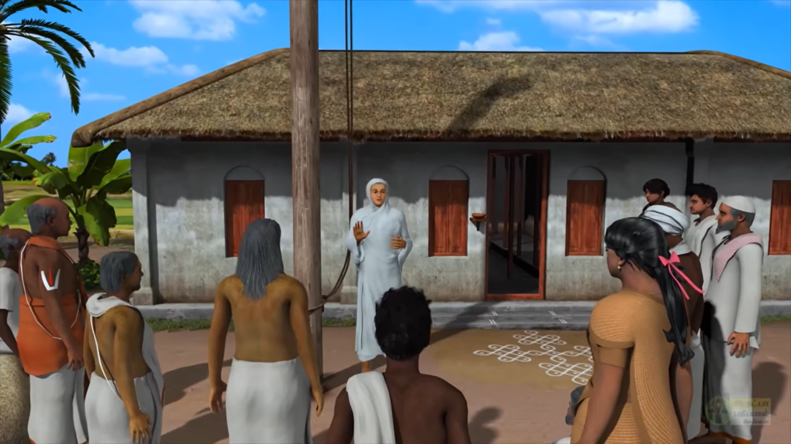
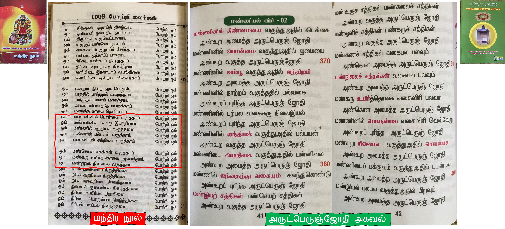
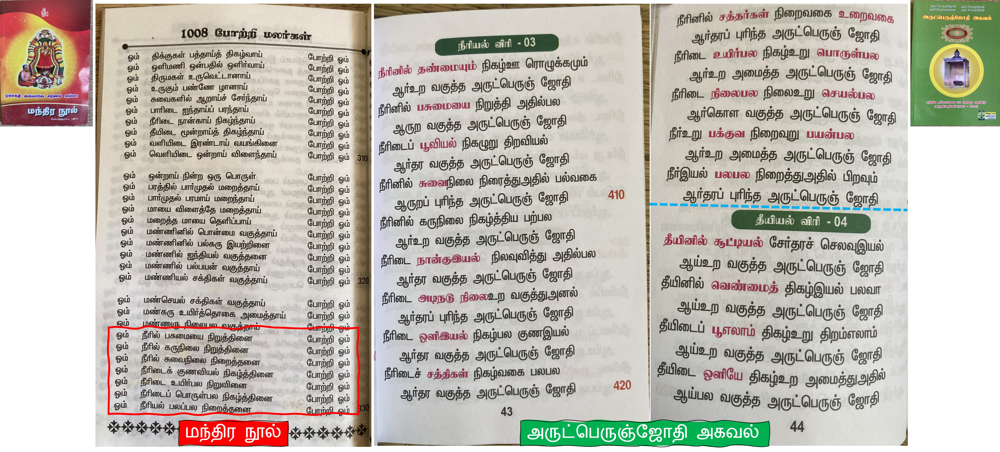
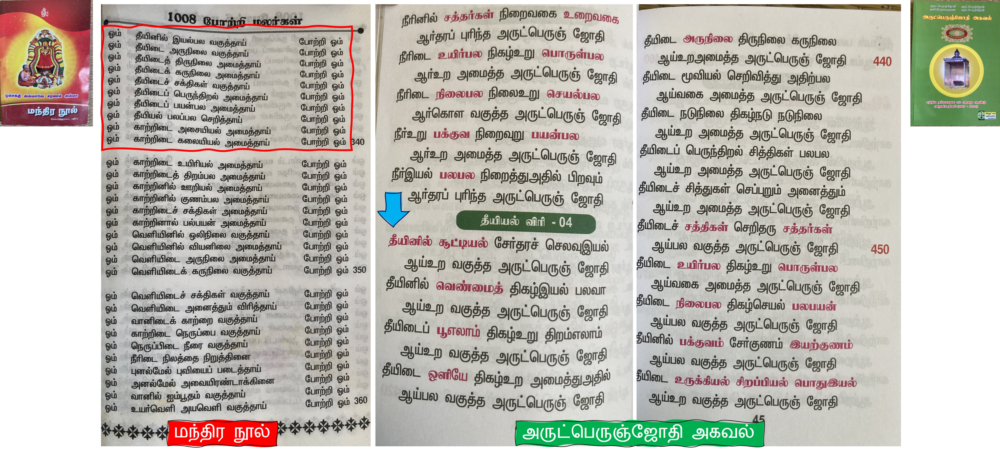
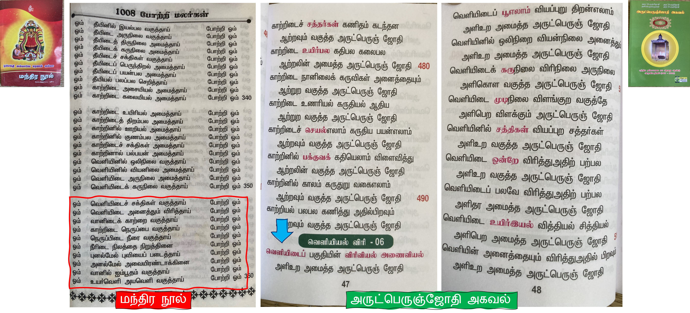

வரவேற்பு மாலை !
வள்ளலார் 1873 ஆம் ஆண்டு பேருபதேசத்தில் அசுத்த மாயாகாரிகளாகிய சித்தர்கள் தெய்வத்தின் (அருட்பெரும்ஜோதி ஆண்டவரின் ) உண்மையை மறைத்து விட்டார்கள் என்று கூறினார். மேலும் சுத்த மாயாகாரியாகிய பெரியோர்களும் இல்லை என்று கூறினார்.
Watch the full Article on YouTube !

👆"பேருபதேசம்" என்று அழைக்கப்படும் வள்ளலாரின் கடைசி உரையைப் படிக்க, --> இங்கே கிளிக் செய்யவும் 👆
👆 சிதம்பரம் ராமலிங்கம் என்று அழைக்கப்படும் வள்ளலாரை பற்றி படிக்க --> இங்கே கிளிக் செய்யவும் 👆
அருட்பெரும்ஜோதி ஆண்டவர் யார் ?😍
கோடான கோடி சிவன் ,பிரம்மா ,விஷ்ணு ,ருத்திரன் ,சதாசிவம் ,சக்தி , சத்தர்கள் ,சிறு தெய்வங்கள் , மேலும் கணக்கில் அடங்காத படைப்புகளை படைத்தவர்
அருட்பெருஞ்ஜோதி ஆண்டவர் .
மந்திரங்கள் 📿"சிவாயை நம, ஓம் நமசிவாய, ஓம் நமோ நாராயண நாய", இதுபோன்று பல மந்திரங்கள் எல்லாம் , முழுமையான மந்திரங்கள் அல்ல 😲.
" 🔥 அருட்பெருஞ்ஜோதி அருட்பெருஞ்ஜோதி தனிப்பெரும் கருணை அருட்பெருஞ்ஜோதி 🔥" என்ற மகா மந்திரத்தின் மூலமாக மட்டுமே அருட்பெருஞ்ஜோதி ஆண்டவரின் அருளை பெற முடியும்.
வள்ளலார், நாம் இப்போது பூமியில் வணங்கிக் கொண்டிருக்கும் கடவுளர்களின் ஆயுட்காலத்தையும் கூறியுள்ளார் 😎.
வரிசை எண்
கடவுளர்கள்
கடவுளர்களின் ஆயுட்காலம் (years)
௧
பிரம்மா
4,32,000
௨
விஷ்ணு
8,64,000
௩
ருத்திரன்
12,96,000
௪
ஈஸ்வரன் (சிவன்)
17,28,000
௫
சதாசிவம்
43,20,000
மேற்கூறிய கடவுள்கள் தங்கள் ஆயுட்காலம் முடிந்த பிறகு, அவர்கள் பூலோகத்தில் மனித உடலுடன் பிறந்து , மரணம் இல்லா பெருவாழ்வை (அருட்ஜோதி நிலை) அடைய சுத்த சன்மார்க்க கொள்கையை பின்பற்ற வேண்டும். அவர்கள் அருட்ஜோதி நிலைய அடையா விட்டால் பிறப்பு இறப்பு என்ற சுழற்சியில் இருந்து விடுபட இயலாது !
அருட்பெரும்ஜோதி ஆண்டவரை அணுகுவது எப்படி ? 😍
✅ இது மிகவும் எளிமையானது, சைவ உணவு உண்பவராக முதலில் மாறுங்கள்.
✅இதுவரை நீங்கள் பயணம் செய்த அனைத்து ஆன்மீக நம்பிக்கைகளிலிருந்தும் வெளியே வாருங்கள்.
✅ சனாதன தர்மம், இந்து, கிறித்துவம், இஸ்லாம், சித்தர் வழிபாடு மற்றும் பிற மதங்களில் , மார்க்கங்களில் உள்ள எந்த சடங்குகளையும் பின்பற்றாதீர்கள்.
✅ வாசியோகம், கிரியா யோகம் , குண்டலினி விழிப்பு , சமாதி பயிற்சிகள் போன்ற எந்த ஒரு பயிற்சிகளும் செய்ய வேண்டாம்.
✅நம்புங்கள், நம் தந்தை அருட்பெரும்ஜோதியை அணுக எந்த குருவும் தேவையில்லை.
✅ உயிர்கள் பசியுடன் இருப்பதைக் கண்டால், அவர்களுக்கு உணவு வழங்கி பசியைப் போக்குங்கள்.
✅ கடவுள் ஒருவரே என்று நம்புங்கள், அவர் மகா பெரிய கருணை ஒளி வடிவில் இருக்கிறார்.
✅ சுத்த உஷ்ணத்தை உருவாக்க யோகிகள் ஆயிரம் ஆயிரம் ஆண்டுகள் கடும் தவம் செய்கிறார்கள்.
ஆனால் வள்ளலார் கூறுகிறார் , ஒருவரால் யோகிகளை விட பல கோடி மடங்கு சுத்த உஷ்ணத்தை எந்த ஒரு யோக
பயிற்சிகளும் இல்லாமல் உருவாக்க முடியும் , எவ்வாறு எனில் ஒரு ஜாமம் நேரம் , நாம் அருட்பெருஞ்ஜோதி ஆண்டவரே
நினைத்தாலே போதும் சுத்த உஷ்ணத்தை உருவாக்கிக் கொள்ளலாம் என்று கூறுகிறார் . அவ்வாறு உருவாக்கிக் கொண்ட
சுத்த உஷ்ணத்தின் மூலமாக அருட்பெருஞ்ஜோதி ஆண்டவரின் உண்மையை மறைத்துக் கொண்டிருக்கும் ஏழு மாயாத்திரைகளை
நீக்கிக் கொள்ளலாம் என்று வள்ளலார் கூறுகிறார். வள்ளலாரின் வார்த்தையை நம்புங்கள் ஏனென்றால் அவர் மட்டுமே மரணம்
இல்லா (அருட்ஜோதியின் நிலை) பெருவாழ்வில் வாழ்ந்து கொண்டுள்ளார்.
✅ ஒரு தீபத்தை உங்கள் எதிரில் வைத்துக் கொள்ளுங்கள் 🪔 .
✅ "அருட்பெருஞ்ஜோதி அருட்பெருஞ்ஜோதி தனிப்பெருங்கருணை அருட்பெருஞ்ஜோதி"
என்ற மகா மந்திரத்தை நமது தந்தையர் ஆன அருட்பெருஞ்ஜோதி ஆண்டவரை பார்க்க வேண்டும் என்கின்ற
முழு முயற்சியுடன் 🕑 இரண்டு மணி நேரம் 24 நிமிடங்கள் , மந்திரத்தை கூறினால் நாம் ஆண்டவரை தரிசிக்கலாம்.
✅ சுத்த சன்மார்க்கத்தில் கூறியுள்ள இந்திரியா ஒழுக்கம், கரண ஒழுக்கம், ஜீவ ஒழுக்கம், ஆன்ம ஒழுக்கம் போன்ற ஒழுக்கங்களை பின்பற்றவும்
யார் அந்த அசுத்த மாயாகாரிகளாகிய சித்தர்கள் ?
யார் அந்த சுத்த மாயாகாரியாகிய பெரியோர்கள் ?
" இதற்கான பதிலை நாம் போகர் எழுதிய 📚 போகர் 7000 ( சப்த காண்டம் ) என்ற நூலில் இருந்து பார்க்கலாம் "
முதலில் சித்தர்கள் என்றால் யார் ?
மனித நிலையில் உள்ளவர்களுக்கு சத்தினி பாதம் நிகழ்ந்தாள் அவர்களுக்கு அஷ்டமா சித்திகளை கைவரப் பெறுவார்கள். சத்தினி பாதத்தை நிகழ்த்துவது ஓங்கார சத்தி. இதைத்தான் சித்தர்கள் தங்களுடைய பாடல்களில் மனோன்மணி தாயே, வாலைப்பெண் என்று குறிப்பிட்டார்கள். கீழே உள்ள எடுத்துக்காட்டுகளை பாருங்கள்.

அகஸ்தியர்:
சத்தியே பராபரமே ஒன்றே தெய்வம்
சகலவுயிர் சீவனுக்கு மதுதா னாச்சு
கொங்கணச் சித்தர்:
சித்தர்கள் போற்றிய வாலைப் பெண் ணாமந்த
சத்தியின் மேற்கும்மிப் பாட்டுரைக்க
போகர்:
தானான யின்னமொரு போக்குசொல்வேன் தகமையுள்ள நற்பாலா பண்புள்ளானே
கோனான எனதையர் காலாஙிகிநாதர் கொற்றவனார் எந்தனுக்குச் சொன்னநீதி
தேனான மனோன்மணியாள் கடாட்சத்தாலே தெளிவுடனே எந்தனுக்கு உபதேசித்தார்
அஷ்டமா சித்திகளை பெற்ற பின்பும், அதை பொருட்படுத்தாமல் ஜீவகாருண்யத்தோடும், தயவுடன் இருந்தால் சிவ நிலைக்கு செல்லலாம் . அதிலிருந்து அருட்பெருஞ்ஜோதி ஆண்டவரின் நிலைக்கும் செல்லலாம்.
வள்ளலார் சுத்த சன்மார்க்கத்தில் சத்தினி பாதத்தை ஜீவகாருண்யம், சத்விசாரம், பரபோகாரம் மூலமாக மட்டும்தான் நிகழ்த்த வேண்டும் என்று சொல்லி உள்ளார்.
ஓ! அப்பொழுது சத்தினிபாதத்தை வேறு ஒரு முறையிலும் நிகழ்த்திக் கொள்ளலாமா ? ஆம் நிகழ்த்திக் கொள்ளலாம். வாசியோகத்தின் மூலமாகவும் நிகழ்த்திக் கொள்ளலாம் .இதைத்தான் பெரும்பாலான சித்தர்கள் கடைப்பிடித்தார்கள். இந்த முறையைத்தான் அவர்களுடைய பாடல்களிலும் எழுதி உள்ளார்கள். கீழே உள்ள எடுத்துக்காட்டுகளை பாருங்கள்.
போகர்:
நாட்டமாய் லகுவாக மூலம்பாரு நலமானவாசிகொண்டு ஊதியூதி
ஊட்டமாய் சாக்கிரத்தில் நின்றுநின்று உத்தமனே நந்திகண்டால் வாதங்காணும்
தூட்டமாய் வெறும்பேச்சால் வார்த்தைசொன்னால் சுடுகாட்டுப்பிணமாக சொல்லுக்கொக்கும்
பூட்டுவாய் மூலத்தின் ஒளிகாண்மட்டும் பொற்கொடிபோல் சுழிமுனையும் திறந்துபோகும்
கொங்கணச் சித்தர்:
ஏய்க்கு தேய்க்கு தஞ்செழுத் துவகை
எட்டிப் பிடித்துக் கொளிரண்டெழுத்தை
நோக்கிக்கொள் வாசியை மேலாக வாசி
நிலையைப் பாரடி வாலைப் பெண்ணே
இப்போது நாம் போகர் யார் என்று பார்ப்போம் !
போகர் வாழ்ந்த காலம் திருமூலரின் காலத்திற்குப் பின்பு தான். எடுத்துக்காட்டு பாடல் !
அவுஷதமொடு வவுஷதவகை பதினேழும் அடங்களுஞ் சொல்லு ரெண்ணாயிரத்துள்ளே வவுஷதமொடு ஏழுலட்சகிரந்தப் போக்கை இடித்தும் எண்ணாயிரமாம் என்பாட்டர்சொன்னார் கவுஷதமெண்ணாயிரத்தைத் திரட்டித்தானும் கதித்த ஐயாயிரமாய் பின்புசொன்னார் மவயஷத மூவாயிரமும் ஆயிரம்பின்பு சொன்னார்முந்நூறு முப்பத்து மூன்றென்றாரே
போகர் 7000 - சப்த காண்டம்
மருந்துகளொடு பாஷாணங்கள் பதினேழு பற்றியும் திருமூலர் தன்னுடைய எட்டாயிரம் நூலில் கூறியுள்ளார். ஏழுலட்சம் பாடல்களின் கருத்துகளையும் தன்னுடைய எட்டாயிரம் நூலில் கூறியுள்ளார். பின்னர் அதையே சுருக்கி ஐயாயிரம் பாடலில் சொன்னார். பின்னர் அதையும் சுருக்கி மூவாயிரம் பாடலில் சொன்னார். அதை மூவாயிரத்து முன்னூற்று முப்பத்து மூன்றென்று சொல்வார்கள்
போகர் 7000 - சப்த காண்டம்
இதை வள்ளலார் திருமந்திரம் மொத்த பாடல்கள் எட்டாயிரம் என்று உரைநடை பகுதியில் கூறியுள்ளார்.
“சாத்திரங்களிற் சிறந்தது திருமூலர் திருமந்திரம். இஃது மொத்தம் எண்ணாயிரம்”
வள்ளலார் சுத்த சன்மார்க்கத்தில் கூறுகின்ற மரணமில்லா பெருவாழ்வை வாசி யோகம் மூலமாக அடைய முடியுமா என்றால் இல்லை !
போகர் தன்னுடைய குரு கலாங்கிநாதர் வாசியோகத்தை மேற்கொண்டு சமாதிக்குச் சென்று மறுபடியும் இறந்து கைலாயபதிக்கு (astral galaxy - சுக்கும உலகம் ) சென்று விட்டார் என்று கூறியுள்ளார் !
1. கீழே உள்ள பாடலில் போகர், ஒரு நாள் அழிவு கண்டிப்பாக வரும் என்று கூறியுள்ளார். அதாவது மரணம் இல்லாமல் நம்மால் வாழ முடியாது என்று கூறுகிறார்.
பேரான தத்துவங்கள் அறிந்துமென்ன பேருலகில் ஞானிகளாய் இருந்துமென்ன நேரான நல்லவழி தெரிந்துமென்ன நேர்மையுடன் அறியாமல் இருந்துமென்ன கூரான சாத்திரத்தைக் கற்றுமென்ன குவலயத்தில் வெகுகாலம் இருந்துமென்ன தூரான கெட்டவழி சென்றுமென்ன துறையோடு காலம்வரை ஒன்றுங்காணே
போகர் 7000 - சப்த காண்டம்
பெரிய தத்துவங்கள் எல்லாம் அறிந்தும் என்ன பயன். ஞானிகளாய் இருந்தும் என்ன பயன். நல்ல வழி தெரிந்தும் என்ன தெரியாமல் இருந்தும் என்ன பயன். சாத்திரத்தை கற்றும் என்ன பயன். உலகில் வெகு காலம் இருந்தாலும் என்ன பயன். கெட்ட வழியில் சென்றாலும் என்ன பயன். ஒரு காலும் காலம் அழியும் வரை யாராலும் வாழமுடியாது என்பதே உண்மை.
போகர் 7000 - சப்த காண்டம்
2. கீழே உள்ள பாடலில் பெரும்பாலான சித்தர்கள் இந்த உடலை பலகாலம் வைத்து வாழலாம் என்று கூறுகிறார்கள். ஆனால் அது அனைத்துமே பொய் என்று எனது குருவான காலாங்கிநாதர் எனக்கு சொல்லியதாக கூறுகிறார்.
காணவே பிரபஞ்ச வாழ்க்கையாவும் கருத்துடனே கொண்டவர்க்கு ஒன்றுமில்லை தோணவே நூலாதி நூல்கள்தோறும் துடர்ந்துமே சடலமது இருக்கவென்று மாணவே சித்தர்முனி ரிஷிகளெல்லாம் மாராட்ட மாகவல்லோ நூல்செய்தார்கள் வேணவே காலாங்கி நாதர்தம்மால் கண்டறிந்த உளவுதன்னை யான்சொல்வேனே
போகர் 7000 - சப்த காண்டம்
இந்த உலக வாழ்க்கையின் உண்மை அறிந்து கொண்டவர்களுக்கு ஒன்றும் இல்லை. ஆனால் பல சித்தர்கள் நூல்களில் இந்த உடலோடு பல காலம் வாழலாம் என்று பொய்யாக எழுதி வைத்துள்ளார்கள். இந்த உண்மையை கண்டறிந்த எனது குரு காலாங்கி எனக்கு போதித்த உளவுகளை நான் கூறுகிறேன்.
போகர் 7000 - சப்த காண்டம்
3. கீழே உள்ள பாடலில் கலாங்கிநாதர் போன்ற பல சித்தர்கள் எல்லாம் வாசியோகம் செய்தார்கள். பின்பு அவர்கள் வைகுண்டம் (Astral galaxy – சுக்கும உலகம்) எனும் மேலோகம் சென்று இறந்து விட்டார்கள் என்று கூறுகிறார் .யாவரும் இந்த உலகில் நிலையாக இருந்தது இல்லை என்பதையும் கூறியுள்ளார்.
ஆச்சென்ற தேகமது நித்யாநித்தம் அப்பனே யாமறிந்த வரைக்குஞ்சொல்வோம் மூச்சடங்கி எனதையர் காலாங்கிநாதர் மூன்றுயுக கோடிவரை சீனந்தன்னில் பேச்சொன்றும் இல்லாமல் சாமாதிதன்னில் பிணம்போல இருந்தாரே சிலதுகாலம் வாச்சலுடன் வாசிதனை அடக்கிக்கொண்டு வையகத்தில் சிலதுநாளா இருந்திட்டாரே
போகர் 7000 - சப்த காண்டம்
எனது குருவான காலாங்கி நாதரும் சீனாவில் மூன்று யுகம் மூச்சடங்கி சமாதியிலே இருந்தார் என்று கூறுவார்கள். ஆனால் வாசியோகம் செய்து கொண்டு சில காலம் இருந்தார் என்பதே உண்மை.
போகர் 7000 - சப்த காண்டம்
இருந்திட்ட காலாங்கி தம்மைப்போல எழிலான சித்தர்முனி ரிஷிகளெல்லாம் பொருந்தியே பூவுலகில் வாசிகொண்டு பொன்னுலக நாட்டுக்கு போனார்தாமும் திருந்தியே ஒருவருந்தான் இருந்ததில்லை சிறப்புடனே வைகுண்டம் சேர்ந்தாரங்கே வருந்தியே அழைத்தாலும் வருவதுண்டோ வருங்காலம் தானிருந்தால் வருகுந்தானே
போகர் 7000 - சப்த காண்டம்
காலாங்கி நாதர் போன்றே பல சித்தர் முனி ரிஷிகள் எல்லாம் வாசியோகம் செய்தார்கள். பின் அவர் போலவே வைகுண்டம் எனும் மேலோகம் சென்றார்கள். ஒருவரும் இந்த உலகில் நிலையாக இருந்தது இல்லை. நீங்கள் என்ன தான் அழைத்தாலும் திரும்பி வரமுடியுமா. அப்படி வருங்காலத்தில் நீங்கள் இருக்க முடியும் என்றால் மட்டுமே அவர்களும் வருவார்கள். இதுவே உண்மை.
போகர் 7000 - சப்த காண்டம்
இந்தப் பாடல் வழியாக நாம் உணரப் பெறுவது, வாசியோகம் மூலமாக நாம் வள்ளலார் கூறுகின்ற மரணம் இல்லா பெருவாழ்வை அடைய முடியாது என்பதே!
வள்ளலார் சுத்த ,பிரணவ, ஞான தேகங்கள் அழிவில்லா தேகங்கள் என்று கூறியுள்ளார். இந்த மூன்று தேகங்களும் சுத்த சன்மார்க்கத்துக்கு உரிய தேகங்கள் ஆகும். இதுவரையும் இந்த தேகங்களை வள்ளலாரைத் தவிர வேறு எவரும் அடையவில்லை என்பதை அறிக. மேலும் அசுத்த மாயா சித்தர்கள் வாசி பயிற்சி மூலமாகவும், கர்ப்பம் மூலமாகவும் தங்கள் தேகத்தை சித்தி செய்து , நீண்ட காலம் வாழ்ந்தார்கள் என்று அறிக. கீழே உள்ள எடுத்துக்காட்டு பாடலை பார்க்கவும்.
பண்ணவே காயாதி கற்பவுண்டை பாருலகில் நாதாக்கள் ரிஷிகள்தாமும் வண்ணமுடன் மாணாக்கள் பிழைக்கவென்று வாகுடனே சீனபதி தேசத்தாற்குதிண்ணமுடன் இப்பாகம் செய்துவைத்தேன் திறமையுடன் காயாதி கற்பந்தன்னை நண்ணமுடன் உண்டுமல்லோ மாந்தர்தாமும் மானிலத்தில் சித்தரைப்போல் இருந்திட்டாரே
போகர் 7000 - சப்த காண்டம்
இந்த மருந்தை உண்டை போல் செய்து தினமும் உண்பதற்கு மக்களுக்கு சொல்லுகிறேன். இந்த முறையை சீன மக்களுக்கு சொல்லிக்கொடுத்து அவர்களும் அதை உண்டு சித்தரைப் போல் இருந்தார்கள்
போகர் 7000 - சப்த காண்டம்
இருந்திட்டார் வெகுகோடி காலமப்பா எழிலான சித்தர்முனி தம்மைப்போல குருந்திட்ட சமாதிதனில் , இருந்துகொண்டு குருவான காளாங்கிநாதரை மனதிலெண்ணி திருந்திட்ட சிவயோகம் தன்னிற்சென்று தீரமுடன் காயத்தை நிருத்திக்கொண்டு பொருந்திட்ட மாகவல்லோ வாசிதன்னை பூட்டியே உள்ளடக்கி புரிந்திட்டாரே
போகர் 7000 - சப்த காண்டம்
சித்தரைப் போல் வெகு கோடி காலம் சமாதி நிலையில் இருந்துகொண்டு காலாங்கி நாதரை நினைத்து வாசியோகம் செய்து கொண்டு இருந்தார்கள்
போகர் 7000 - சப்த காண்டம்
இதனால்தான் வள்ளலார் சமாதி பழக்கம் பழக்கம் அல்ல சகஜ பழக்கமே பழக்கம் என்று கூறியும் உள்ளார் !
“ஆடாதீர் சற்றும் அசையாதீர் வேறொன்றை
நாடாதீர் பொய்உலகை நம்பாதீர் - வாடாதீர்
சன்மார்க்க சங்கத்தைச் சார்வீர் விரைந்தினிஇங்
கென்மார்க்க மும்ஒன்றா மே.! “
ஆனால் நாம் சுத்த சன்மார்க்கத்தில் இருக்கின்றேன் என்று சொல்லிக்கொண்டு. வாசி போன்ற கலைகளை பயின்று கொண்டு இருந்தால், நாம் அடைய வேண்டிய பெரிய லாபமாகிய மரணம் இல்லா பெருவாழ்வில் வாழ முடியாது இது சத்தியம் !
இப்போது நாம் போகர் குளிகையை பயன்படுத்தி ஏழு உலகத்துக்கும் (Astral galaxies) சென்று வந்து
தான் கண்டதை தன்னுடைய போகர் 7000 என்ற நூலில் பதிவு செய்துள்ளார் அது என்னவென்று பார்ப்போம் !
கைலாய பதி(Astral galaxies – சுக்கும உலகம்) என்ற உலகத்தில் சித்தர்கள் மண்ணுலகத்தில் சமாதியில் இருந்து இறந்து பின்பு அவர்களுடைய
ஆன்மா கைலாய பதி இல் இருப்பதை பார்த்தார். சில சித்தர்கள் தண்டனைக்கும் உள்ளானார்கள்.ஏனென்றால் அவர்கள் பூலோகத்தில் நிறைய
பிழைகள் பண்ணி இருந்தார்கள் .
1. கொங்கணவர்
கீழே உள்ள பாடலில் கொங்கணர் என்ற சித்தர் இறந்த பின்பு , பூமியில் தான் செய்த பாவத்திற்காக விண்ணுலகத்தில் அகத்தியரால் தண்டிக்கப்பட்டு கொண்டுள்ளார் என்று கூறுகிறார். இதில் இன்னொரு உண்மை புலப்படுகிறது என்னவென்றால் அகத்தியரும் இறந்து விண்ணுலகத்திற்கு சென்று விட்டார் என்று தெரிய வருகிறது.
தாமான இன்னமொரு கருமானங்கேள் தயவாகச் சொல்லுகிறேன் தன்மையாக சாமான மானதொரு அகத்தியர்தாமும் சாங்கமுடன் வைகுண்டம் தன்னிற்கண்டேன் கோமானாம் கொங்கணவர் செய்தபாவம் குவலயத்தில் முற்பிறப்பில் மெத்தவுண்டு பூமானாம் கொங்கணரைக் கேள்விகேட்டு புத்தியுடன் தண்டனைக்கு உள்ளாக்கினாரே
போகர் 7000 - சப்த காண்டம்
இன்னுமொரு முறை சொல்லுகிறேன் கேளு. அகத்தியர் அவர்களையும் வைகுண்டத்தில் கண்டேன். கொங்கணவர் முன் பிறவியில் செய்த பாவம் நிறைய உண்டு. அந்த கொங்கணரை கேள்விகள் கேட்டு தண்டனைக்கு உள்ளாக்கினார்கள்.
போகர் 7000 - சப்த காண்டம்
2. இடைக்காடர்
கீழே உள்ள பாடலில் இடைகாடர் என்ற சித்தரும் இறந்துவிட்டார் என்று தெரிய வருகிறது.
ஆக்கினார் இடைக்காடார் தன்னைக்கண்டேன் அப்பனே அவர்செய்த வினைதான்கேளு பாக்கியங்கள் அனேகமதாய்க் கொண்டுயென்ன பாருலகில் சிலதருமம் இல்லையப்பா நோக்கமுடன் அவர்செய்த பூர்வபுண்ணியம் நொடிக்குள்ளே ராஜனவன் கண்டாராய்ந்து தாக்கமுடன் அவர்மீதில் பட்சம்வைத்து கஷ்டமில்லா ஆக்கினைக்குள் சென்றிட்டாரே
போகர் 7000 - சப்த காண்டம்
இடைக்காடர் சித்தரையும் அங்கே கண்டேன். அவருக்கு நேர்ந்த வினையை கேளு. இந்த உலகில் சில தருமம் போல் தெரிந்தாலும் அவையும் பாவமே ஆகும். அவர் செய்த பூர்வ புண்ணியங்களை கண்டு ஆராய்ந்து அவருக்கு கஷ்டமில்லா தண்டனைகள் கொடுப்பதையும் கண்டேன்.
போகர் 7000 - சப்த காண்டம்
3. சிவவாக்கியர்
கீழே உள்ள பாடலில் சிவவாக்கியர் என்ற சித்தரும் இறந்துவிட்டார் என்று தெரிய வருகிறது.
சென்றவுடன் சிவவாக்கியர் தன்னைக்கண்டேன் சிறப்புடனே அவர்தம்மை கேள்விகேட்டார் ஒன்றுமில்லை அவர்மீதில் குற்றமில்லை உத்தமனே வைகுண்டப் பதியில்தாமும் குன்றின்மேலிக் கொடுத்தார் தூதர்தாமும் கொப்பெனவே சாமிக்குத் தொண்டனாக்கி வென்றிடவே சதாகாலம் கைலாசத்தில் வேகமுடன் வீற்றிருக்க கெடுவுண்டாச்சே
போகர் 7000 - சப்த காண்டம்
சிவவாக்கியர் தன்னை கண்டேன். அவர் மீதில் குற்றம் ஏதும் இல்லை என்பதால் வைகுண்டத்தில் குன்றின் மேல் இருக்கும் சாமிக்கு தொண்டனாக்கி சதாகாலம் கைலாசத்தில் இருப்பதற்கு பலன் உண்டாச்சு.
போகர் 7000 - சப்த காண்டம்
4.பிரம்மமுனி
கீழே உள்ள பாடலில் பிரம்மமுனி என்ற சித்தரும் இறந்துவிட்டார் என்று தெரிய வருகிறது.
ஆச்சப்பா பிரம்மமுனி தன்னைக்கண்டேன் அப்பனே அவர்செய்த கொடுமைகேளும் மூச்சடங்கி பிணம்போல இருந்தசித்தன் முடிமீதில் ஜெபமாலை அணிந்துகொண்டு பாச்சலுடன் வெகுதேசம் ஓடிச்சென்று பாடுபட்டு திரவியங்கள் சேகரித்து பாச்சலுடன் சாத்திரங்கள் படித்துக்கொண்டு மாறாட்டம் ஆகவல்லோ மறைத்தார்தாமே
போகர் 7000 - சப்த காண்டம்
பிரம்ம முனி தன்னை கண்டேன். அவர் செய்த கொடுமை கேளு. மூச்சடக்கி பிணம் போல் இருந்து கொண்டு சித்து வேலைகள் செய்து பல நாடுகளுக்கு சென்று செல்வங்கள் சேர்த்தார். பல சாத்திரங்களை படித்திருந்தும் உண்மைகளை மறைத்தார்.
போகர் 7000 - சப்த காண்டம்
5. கமலமுனி
கீழே உள்ள பாடலில் கமலமுனி என்ற சித்தரும் இறந்துவிட்டார் என்று தெரிய வருகிறது.
செய்யவே கமலமுனி தன்னைக்கண்டேன் சேர்வைமுகம் காணுகையில் அடியேன்பக்கம் பையவே தீர்ப்புமிகச் செய்யக்கண்டேன் பாழ்நரகில் சிலபேர்கள் இருக்கக்கண்டேன் தொய்யவே காலனவன் கிருபைவைத்து துப்புரவாய் எந்நாளும் தருமஞ்செய்ய மெய்யுடனே தீர்ப்புரைக் கண்டேன்யானும் மேதினியில் சொன்னாலும் பொய்யென்பாரே
போகர் 7000 - சப்த காண்டம்
கமலமுனி தன்னைக் கண்டேன். அவர் அடியேன் பக்கம் இருக்க கண்டேன். பல தீர்ப்புகள் சொல்லி பாழ்நரகில் பலர் இருப்பதை கண்டேன். காலன் எல்லார் மீதும் கருணை வைத்து எப்போதும் தருமம் செய்ய வேண்டும் என்று தீர்ப்பு சொல்வதை கண்டேன். ஆனால் இதை எல்லாம் பூமியில் உள்ளவர்கள் பொய் என்பார்கள்..
போகர் 7000 - சப்த காண்டம்
6. புலிப்பாணி
கீழே உள்ள பாடலில் புலிப்பாணி என்ற சித்தரும் இறந்துவிட்டார் என்று தெரிய வருகிறது.
பொய்யென்பார் பூதலத்தார் சொல்லுவார்கள் பொங்கமுடன் யான்கண்ட வரையிற்சொன்னேன் மெய்யுடனே புலிப்பாணி தன்னைக்கண்டேன் மேதினியில் அனேகமதாய் பாவஞ்செய்தார் கைதவமாய் அவர்செய்த பாவந்தன்னை கண்டுமல்லோ எமதர்ம ராஜர்தானும் பையவே வாக்கினைகள் செய்யக்கண்டேன் பாழ்நரகில் இழுத்துபோகக் கண்டேன்தானே
போகர் 7000 - சப்த காண்டம்
பொய்யென்று சொன்னாலும் நான் கண்டதை சொல்லுகிறேன். புலிப்பாணி தன்னை கண்டேன். அவர் பூமியில் பல பாவங்கள் செய்தார். அவர் செய்த பாவங்களால் அவரை நரகத்தில் இழுத்துச் சென்று தண்டனைகள் கொடுப்பதை கண்டேன்..
போகர் 7000 - சப்த காண்டம்
7. புண்ணாக்கர்
கீழே உள்ள பாடலில் புண்ணாக்கர் என்ற சித்தரும் இறந்துவிட்டார் என்று தெரிய வருகிறது.
தானான புண்ணாக்கர் தன்னைக்கண்டேன் தாக்கான அவர்செய்த கொடுமைமெத்த தேனான எனதையர் காலாங்கிநாதர் தேர்வேந்தர் ஆனவரும் சொன்னதுண்டு பானான புண்ணாக்கர் தன்னையானும் பரமனிட கைலைதனில் கண்டேனப்பா கோனான புண்ணாக்கர் செய்தபாவம் கோடியுண்டு லக்கோயில்லை என்பார்காணே
போகர் 7000 - சப்த காண்டம்
புண்ணாக்கு சித்தர் கண்டேன். அவர் செய்த கொடுமைகளை எனது குரு காலாங்கினாதரும் சொன்னதுண்டு. அவரை கைலாசத்தில் கண்டேன். அவர் செய்த பாவம் பல உண்டு. கணக்கே இல்லை என்பார்கள்.
போகர் 7000 - சப்த காண்டம்
காணவே அவருக்கு வாக்கினைகள் கண்கொள்ள முடியாது வைகுண்டத்தில் தோணவே மாடுகட்டி புண்ணாக்கீயார் தொடர்வழக்கு மெத்த அதிகாரத்தாரம் வேணவே வட்டிக்கு வட்டிவாங்கி மேதினியில் இருந்துபல மோசஞ்செய்து நாணவே நாணயங்கள் அதிகஞ்சொல்லி நயமுடனே வஞ்சகமும் செய்தார்தாமே
போகர் 7000 - சப்த காண்டம்
அவருக்கான தண்டனைகள் வைகுண்டத்தில் கண்டேன். அவர் மக்களுக்கு வட்டிக்கு பணம் கொடுத்து அதற்கு ஈடாக மாடுகள் வாங்கி நிறைய சொத்து சேர்த்த காரணத்தால் தண்டனைகள் கிடைத்தது.
போகர் 7000 - சப்த காண்டம்
8. சட்டமுனி
கீழே உள்ள பாடலில் சட்டமுனி என்ற சித்தரும் இறந்துவிட்டார் என்று தெரிய வருகிறது.
சண்டியான் சட்டமுனி தன்னைக்கண்டேன் தகைமையுடன் அவர்செய்த பாவங்கேளு அண்டிவந்த சீஷருக்கு உபதஞ்சொல்லி அநியாய மாகவல்லோ நூல்மறைத்தார் கண்டிதமாய் பாடல்களை சொன்னார்போல கருமறைவு காரணத்தை மறைத்துப்போட்டார் பண்டிதங்கள் இல்லாமல் செய்ததாலே பாவம்வந்து சேர்ந்ததென தண்டித்தாரே
போகர் 7000 - சப்த காண்டம்
சட்டமுனி தன்னை கண்டேன். அவர் செய்த பாவம் கேளு. அவரை நம்பி வந்த சீடருக்கு தவறுதலாக சொல்லிகொடுத்து நூல் மறைத்த பாவத்துக்காக அவருக்கும் தண்டனைகள் கொடுத்தார்கள்.
போகர் 7000 - சப்த காண்டம்
பார்க்கையிலே சாத்திரங்கள் மறைப்புமெத்த பாழாகி மாந்தரெல்லாம் சுட்டுமாண்டார் தீர்க்கமுடன் மறைபொருளை ஒளித்துச்சொல்லி திடங்குலைந்து போவதற்கு திறவுசொல்லி சேர்க்கவே ஒன்றுவிட்டு முன்பின்னாக செழிப்புடனே உட்பொருளை அறியாமற்றான் கார்க்கவே நூலதனைக் கண்ணாற்காட்டி கருவாகத் தான்மறைத்தார் சித்தர்தாமே
போகர் 7000 - சப்த காண்டம்
அந்த சித்தர் செய்த பாவம் சாத்திரங்களை தவறாக மறைத்து சொல்லியதால் பல மனிதர்கள் சுட்டு மாண்டுள்ளனர். அவர் நூலின் உண்மையை மறைத்த குற்றத்திற்கான தண்டனை கொடுக்க வேண்டும்.
போகர் 7000 - சப்த காண்டம்
9. கருவூரார்
கீழே உள்ள பாடலில் கருவூரார் என்ற சித்தரும் இறந்துவிட்டார் என்று தெரிய வருகிறது.
தாமான போகர்முனி சாற்றக்கேளும் சதாகாலம் வைகுண்டம் தன்னில்யானும் வாமான ஆக்கினையின் பக்கந்தன்னில் வாகுடனே சுற்றிவரும் போதிலப்பா நாமான கருவூரார் தன்னைக்கண்டேன் நாயகனார் செய்ததொரு வண்மைகேளு கோமானாம் அரசருக்கு வாதஞ்சொல்லி கோடிபொருள் தானிழக்க செய்தார்தாமே
போகர் 7000 - சப்த காண்டம்
நான் அவ்வாறு வைகுண்டத்தில் சுற்றி வரும் போது தண்டனைகள் கொடுக்கும் இடத்தில் கருவூராரை கண்டேன். அவர் செய்த குற்றம் யாதெனில் அரசருக்கு ரசவாதம் என்ற பெயரில் பல கோடி பொருட்கள் இழப்பு ஏற்படுத்தினார் என்று தண்டனைக்கு உள்ளானார்.
போகர் 7000 - சப்த காண்டம்
10. ராமதேவர்
கீழே உள்ள பாடலில் ராமதேவர் என்ற சித்தரும் இறந்துவிட்டார் என்று தெரிய வருகிறது.
மெய்யான இன்னமொரு மார்க்கம்பாரு மேதினியில் இராமதேவர் செய்தகூத்து பொய்யான சாத்திரத்தை மெய்யதாகப் புகட்டினார் லோகத்து மாந்தர்க்கப்பா துய்யமுடன் சாத்திரத்தைப் பார்த்துப்பார்த்து துறைகெட்டு முறைகெட்டு துன்பப்பட்டு பையவே வெகுபேர்கள் சுட்டலைந்து பாடுபட்டு மாண்டார்கள் கோடியாமே
போகர் 7000 - சப்த காண்டம்
ராமதேவர் என்னும் சித்தர் செய்த கூத்தினை சொல்லுகிறேன் கேளுங்கள். பொய்யான சாத்திரத்தை மெய்யென்று கூறினார். அந்த சாத்திரத்தை மெய்யென்று எண்ணி அதிலுள்ள முறைகளையும் வழிகளையும் பின்பற்றிய காரணத்தால் துன்பம் உண்டாகி வெகுவான மக்கள் சுற்றி அலைந்து மாண்டு போனார்கள்.
போகர் 7000 - சப்த காண்டம்
11. மச்சமுனி
கீழே உள்ள பாடலில் மச்சமுனி என்ற சித்தரும் இறந்துவிட்டார் என்று தெரிய வருகிறது.
விதிக்கையிலே இன்னமொரு அதிசயங்கள் வினவுடனே யாமுரைப்போம் இன்னங்கேளு துதித்தலுடன் மச்சமுனி தன்னையானும் துப்புரவாய் வைகுண்ட பதியில்கண்டேன் மதிக்கவே சாத்திரத்தை மறைவுபேசி மகத்தான நூல்களையே கெடுத்துப்போட்டார் பதிக்கமுடன் மாந்தர்க்குப் பொய்பொய்யாக பாடிவிட்ட படியாலே கர்மமாச்சே
போகர் 7000 - சப்த காண்டம்
இன்னும் பல அதிசயங்கள் கூறுகிறேன் கேளு. மச்சமுனியை நான் வைகுண்ட பதியில் கண்டேன். இவரும் சாத்திரத்தில் பொய்கள் சொல்லி உண்மைகளை மறைத்தவராவார். மக்களுக்கு பல பொய்கள் சொல்லிய காரணத்தால் இவருக்கும் பாவம் உண்டானது.
போகர் 7000 - சப்த காண்டம்
12. தட்சணாமூர்த்தி
கீழே உள்ள பாடலில் தட்சணாமூர்த்தி என்ற சித்தரும் இறந்துவிட்டார் என்று தெரிய வருகிறது.
ஆச்சப்பா இன்னமொரு அதிசயங்கேள் அப்பனே யானறிந்த வரைக்குஞ்சொல்வேன் வாச்சலுடன் தட்சண மூர்த்திதன்னை வைகுண்டப் பதிதனிலே கண்டேன்யானும் கூச்சலுடன் கிங்கிலியர் தூதர்தாமும் குய்யோதான் முறையுமென்று அபயமிட்டு பேச்சுடனே தட்சணா மூர்த்தியாரை பெருமையுடன் விசாரணையில் பார்த்திட்டேனே
போகர் 7000 - சப்த காண்டம்
இன்னுமொரு அதிசயம் சொல்லுகிறேன் கேளு. தட்சணாமூர்த்தியை வைகுண்டபதியில் கண்டேன். கிங்கிலியர்கள் எனும் அரக்கர்கள் முழக்கமிட தட்சணாமூர்த்தியை விசாரணையில் பார்த்தேன்.
போகர் 7000 - சப்த காண்டம்
பார்க்கையிலே தட்சணா மூர்த்தியாரும் பாடல்களை வெகுவாக மறைத்துப்போட்டார் சேர்க்கமுடன் வாதத்தை முன்பின்னாகச் செப்பினார் திரட்டுமுதல் உளவுமார்க்கம் மூர்க்கமுடன் மருந்துவகை பாஷாணத்தை முன்பின்னால் பேர்மாற்றி பேருறைத்தார் தீர்க்கமுடன் சொன்னதினால் மாந்தர்யாவும் தேசத்தில் சுட்டலைந்து கண்கெட்டாரே
போகர் 7000 - சப்த காண்டம்
தட்சணாமூர்த்தியாரும் உண்மைகளை மறைத்து சாத்திரத்தில் பாடிவத்துள்ளார். ரசவாதம் எனும் பொருளை பற்றி முன்பின்னாக மாற்றி சொன்னார். மருந்துவகை, பாஷாணம் ஆகியவற்றை முன்பின்னாக மறைத்து பாடியுள்ளார். இதனால் இவர் பாடியதை கேட்டு மக்கள் பலரும் உண்மை அறியாமல் சுற்றி அலைந்து கெட்டார்கள்.
போகர் 7000 - சப்த காண்டம்
13. ரோமரிஷி
கீழே உள்ள பாடலில் ரோமரிஷி என்ற சித்தரும் இறந்துவிட்டார் என்று தெரிய வருகிறது.
மேவவே இன்னமொரு தெரிசனங்கேள் மேன்மையுடன் யான்கண்ட வரைக்குசொல்வேன் காவலுட ரோமரிஷி தன்னைக்கண்டேன் கருவாக வைகுண்டம் தன்னிலப்பா ஆவலுடன் அவர்பக்கல் யானுஞ்சென்றேன் அப்பனே கேள்விகள் அனேகமுண்டு பாவமுடன் புண்ணியங்கள் இரண்டைத்தானும் பராகரித்துக் கேள்விகளும் கேட்கலாச்சே
போகர் 7000 - சப்த காண்டம்
மேலும் நான் அறிந்த்வற்றை சொல்லுகிறேன் கேளு. அந்த வைகுண்டத்தில் ரோமரிஷியை கண்டேன். அவரிடத்திலும் பாவம் புண்ணியம் கணக்குகளை பரிசோதித்து கேள்விகள் கேட்டனர்.
போகர் 7000 - சப்த காண்டம்
கேட்கவென்றால் அவர்மீதில் குற்றமெத்த கேள்விகளும் அங்குண்டு சொல்லொணாது நீட்கமுடன் சாத்திரத்தை வெகுவாய்ச்சொல்லி நீடாழி உலகமெலாம் மயங்கப்பண்ணி தாட்கையுடன் ரோமரிஷி கோர்வையாவும் தன்மையுடன் முன்பின்னாய் பாடிவைத்தார் மீட்கமுடன் கோர்வைதனில் நாலுகாப்பு மாளவே முன்பின்னாய்ப் பாடினாரே
போகர் 7000 - சப்த காண்டம்
அவர் மீதும் பல குற்றங்கள் சுமத்தப்பட்டன. அவர் மீதும் சாத்திரத்தை முன்பின்ன்னாக பொய்களை பாடி உலக மக்களை உண்மை அறியாமல் செய்த குற்றம் சுமத்தப்பட்டது. அவருடைய பாடல்களில் நான்கு காப்புகளை முன் பின்னாய் பாடி வைத்திருந்தார்.
போகர் 7000 - சப்த காண்டம்
14. விலாட ரிஷி, வியாசமுனி, சூதமுனி, குருமுனி
கீழே உள்ள பாடலில் விலாட ரிஷி, வியாசமுனி, சூதமுனி, குருமுனி போன்ற சித்தர்களும் இறந்துவிட்டார்கள் என்று தெரிய வருகிறது.
தானான இன்னம்வெகு அதிசயங்கள் தன்மையுடன் சொல்லுகிறேன் தரணியோர்க்கு வேனான விலாடரிஷி தன்னைக்கண்டேன் வியாசமுனி சூதமுனி தன்னைக்கண்டேன் கோனான குருமுனி தன்னைக்கண்டேன் கொற்றவனார் போகரிஷி தன்னைக்கண்டேன் தேனான திருமூலக் கூட்டத்தார்கள் தெய்வபுற பதிதனிலே கண்டேன்பாரே
போகர் 7000 - சப்த காண்டம்
மேலும் பல ரிஷிகளை வைகுண்டபதியில் கண்டேன். விலாட ரிஷி, வியாசமுனி, சூதமுனி, குருமுனி ஆகியவர்களை கண்டேன்.
போகர் 7000 - சப்த காண்டம்
15. இடைக்காடர், அகப்பேய் சித்தர், காசிநாதர்,
வரரிஷி, சுந்தரர்
கீழே உள்ள பாடலில் இடைக்காடர், அகப்பேய் சித்தர், காசிநாதர், வரரிஷி, சுந்தரர் போன்ற சித்தர்களும் இறந்துவிட்டார்கள் என்று தெரிய வருகிறது.
பார்த்தேனே சிவவாக்கியர் தன்னைக்கண்டேன் பாலகனாம் இடைக்காடர் தன்னைக்கண்டேன் மூர்த்தவனாம் அகப்பேய் சித்துதம்மை முடியோடும் சடையோடும் யானுங்கண்டேன் தீர்த்தகிரி தனிலிருந்த காசிநாதர் திறமுடனே கொண்டுவர கண்டேன்யானும் ஏர்த்திடவே வரரிஷி தன்னைக்கண்டேன் எழிலான சுந்தரரைக் கண்டேன்தானே
போகர் 7000 - சப்த காண்டம்
மேலும் சிவவாக்கியர், இடைக்காடர், அகப்பேய் சித்தர், காசிநாதர், வரரிஷி, சுந்தரர் ஆகியோரையும் வைகுண்டபதியில் கண்டேன்.
போகர் 7000 - சப்த காண்டம்
16. குதம்பை
கீழே உள்ள பாடலில் குதம்பை சித்தர் நெடுங்காலமாக வாசி செய்து மூச்சடக்கி இருந்ததாக கூறியுள்ளார் . அப்படி மூச்சடைக்கு இருந்த குதம்பை சித்தரும் இறந்துவிட்டார்.
கேளேதான் ஆடியாந் திங்களப்பா கெவனமுடன் விசாகமென்ற மூன்றாங்காலில் நானப்பா தான்பிறந்த குதம்பைசித்து நலமுடனே திரிகால பூசைசெய்து வேளப்பா யாகமது முடித்துமல்லோ வேள்வியுடன் பாலாமிர்தம் உண்டசித்து ஆளப்பா பெரியோர்கள் நேசம்பெற்று வப்பனே மரப்பொந்தில் இருந்தசித்தே
போகர் 7000 - சப்த காண்டம்
17. பாம்பாட்டி
கீழே உள்ள பாடலில் பாம்பாட்டி சித்தர் நெடுங்காலமாக வாசி செய்து மூச்சடக்கி இருந்ததாக கூறியுள்ளார் . அப்படி மூச்சடைக்கு இருந்த பாம்பாட்டி சித்தரும் இறந்துவிட்டார்
மாயான சித்தல்லோ மகிமைபாரு மகத்தான புலிப்பாணி மைந்தாகேளு தாயான பாம்பாட்டி சித்தரப்பா தாரணியில் நெடுங்கால மிருந்தசித்து காயான முப்பழமும் பாலுங்கொண்டு கலியுகத்தில் நெடுநாளாய் இருந்தசித்து சேயான பாம்பாட்டி சித்துதாமும் சீருலகில் பிறந்ததொரு சித்துதானே
போகர் 7000 - சப்த காண்டம்
பாம்பாட்டி சித்தர் தன்னுடைய பாடல்களில் தான் செய்யும் மாய சித்துக்களை பற்றி கூறியுள்ளார். சித்து வேலைகள் செய்வது பூமியில் தீய செயல் . மேலும் இவர் இறைவனுக்கு சமமாக உள்ளார் என்றும் கூறியுள்ளார். இதன்படி பார்த்தால் பாம்பாட்டி சித்தரும் அசுத்தமாயா சித்தரே. கீழே உள்ள எடுத்துக்காட்டுகளை பாருங்கள்
பாடல் எண் - 27
தூணைச்சிறு துரும்பாக தோன்றிடச் செய்வோம் துரும்பைப் பெருந்தூணாகத் தோற்றச் செய்குவோம் ஆணைபெண்ணும் பெண்ணை யாணு மாகச் செய்குவோம் ஆரவாரித் தெதிராய்நின் றாடு பாம்பே.
பாடல் எண் - 28
எட்டுமலை களைப்பந்தாய் எடுத்தெ றிகுவோம் ஏழுகட லையுங்குடித் தேப்ப மிடுவோம் மட்டுப்படா மணலையும் மதித்திடுவோம் மகாராஜன் முன்புநீ நின் றாடுபாம்பே.
பாடல் எண் - 29
மண்டலமுற் றுங்கையால் மறைத்து விடுவோம் வானத்தையும் வில்லாக வளைத்து விடுவோம் தொண்டருக்குச் சூனியஞ் சொல்லிக் காட்டுவோம் தோன்றலுக்கு முன்பு நின் றாடாய் பாம்பே.
பாடல் எண் - 30
மூண்டெரியும் அக்கினிக்குள் மூழ்கிவருவோம் முந்நீருள் இருப்பினு மூச்ச டக்குவோம் தாண்டிவரும் வன்புலியைத் தாக்கி விடுவோம் தார்வேந்தன் முன்புநீ நின் றாடு பாம்பே.
பாடல் எண் - 31
செப்பரிய மூன்றுலகுஞ் செம்பொன் னாக்குவோம் செங்கதிரைத் தண்கதிராய்ச் செய்து விடுவோம் இப்பெரிய உலகத்தை இல்லாமற் செய்வோம் எங்கள் வல்ல பங்கண்டுநீ யாடு பாம்பே.
பாடல் எண் - 32
வேதன்செய்த சிருஷ்டிகள்போல் வேறுசெய்குவோம் வேதனையு மெங்கள் கீழே மேவச் செய்குவோம் நாதனுடன் சமமாக நாங்களும் வாழ்வோம் நாங்கள் செய்யும் செய்கையிதென் றாடு பாம்பே.
பாடல் எண் - 34
சிறுபுலி யானையாளி சிங்க முதலாய்ச் சிற்றடிக்குக் குற்றேவல் செய்யச் சொல்லுவோம் வீறுபெருங் கடவுளை எங்களுடனே விளையாடச் செய்குவோமென் றாடு பாம்பே
18. கோரக்கர்
கோரக்கர் என்ற சித்தரும் தன்னுடைய நூல் சந்திரரேகையில் கஞ்சாவை சோற்றில் கலந்து கொடுத்து மயக்கியும் உள்ளார்.

20.சிறுதெய்வங்கள்
சங்கிலியன், கறுப்பண்ணன், கன்னிமார் ஏழுபேர் (பிராமி, மகேஸ்வரி, கௌமாரி, இந்திராணி, நரசிம்மி, வாராகி, சாமுண்டி),கறுவீரன், பத்திரகாளி போன்ற தெய்வங்கள் எல்லாம் ஏவல் செய்ய பயன்படுத்தும் தெய்வங்கள் என்பதை அறிக !
செய்யவே குட்டியெனும் வசியமானால் ஜெகத்திலே கோடிவித்தை யாடலாகும் பையவே மாந்தர்மேல் ஏவதாகும் பாங்குடனே கல்லதனை எறியலாகும் மெய்யுடனே ஜெகஜால வித்தையப்பா மேதினியில் ஆருந்தான் செய்யவில்லை பெய்யவே சங்கிலீயன் கறுப்பன்தானும் பேரான அண்ணமார் ஏழுமாமே
போகர் 7000 - சப்த காண்டம்
அப்படி நல்ல சக்தி வாய்ந்த குட்டி சாத்தானை வசியம் செய்தால் பல வித்தைகள் செய்யலாம். மக்கள் மீது பல ஏவல் வேலைகள் செய்யலாம். மக்கள் மேல் குட்டி சாத்தானை வைத்து மறைமுகமாக கல்லெறியும்படி செய்யலாம். மேலும் சங்கிலியன், கறுப்பண்ணன், கன்னிமார் ஏழுபேர் ஆகியோரை வசியம் செய்தும் பல வித்தைகள் ஆடலாம்.
போகர் 7000 - சப்த காண்டம்
ஏழான வண்ணமார் காவலாளர் எழிலான ஜாலமென்ற மாளிதன்னில் பாழான வையன்மார் பிடாரிதானும் பச்சையென்ற தேவதையும் காளியோடு வாழாத குமரிகளாம் சத்தகன்னி வளமுடனே பச்சையென்ற பல்லக்குதன்னை தாழாமல் தோலதனில் எடுத்துக்கொண்டு தகமையுடன் காளிதனை தூக்குவாரே
போகர் 7000 - சப்த காண்டம்
ஏழு கன்னிகளை வசியம் செய்தால் அவர்களே பிடாரி, பச்சை, காளி ஆகிய தேவதைகளை பல்லக்கில் தூக்கி வருவார்கள்.
போகர் 7000 - சப்த காண்டம்
தூக்கியே ஜாலமென்ற மாளிதன்னில் துப்புரவாய் காவலுடன் இருந்துகொண்டு நோக்கமுடன் தேவதையை வசியஞ்செய்து நொடிக்குள்ளே கோடிவித்தை யாடலாகும் பார்க்கவென்றால் லோகமதில் மாந்தர்யாவும் பதபதைத்து நடுநடுங்கி கதருவார்கள் வாக்குடனே வரமுனக்கு பதமுந்தந்து வாகுடனே செல்லுமென செப்புந்தானே
போகர் 7000 - சப்த காண்டம்
அவ்வாறு தேவதைகளை வரவழைத்து மாளிகைக்குள் காவல் வைத்து அந்த தேவதைகளை வசியம் செய்து கோடி வித்தைகள் செய்யலாம். உலகத்தில் மக்கள் எல்லாரும் இந்த வித்தைகளை பார்த்து பயம் கொள்வார்கள். அவர்களுக்கு இந்த தேவதைகளின் வசியத்தால் நல்ல வார்த்தைகளை கூறி நன்மை செய்யல்லம்
போகர் 7000 - சப்த காண்டம்
ஆமேதான் பூதமது தன்னைத்தானும் அப்பனே ஜாலமென்ற மாளிதன்னில் போமேதான் நடுமையம் மத்திவாசல் பொங்கமுடன் கறுவீரன் பத்திரகாளி வேமேதான் கறுப்பண்ணன் டாகினி தானும் மிக்கான காட்டேரி சங்கிலிநாயன் தாமேதான் சொன்னபடி மசானவீறி சட்டமுடன் தெய்வங்கள் அனேகமுண்டே
போகர் 7000 - சப்த காண்டம்
இந்த மாளிகையில் பூதம் ஒன்றை வசியம் செய்ய வேண்டும் என்றால் அதற்கென்று கறுவீரன், பத்திரகாளி, கறுப்பண்ணன், டாகினி, காட்டேரி, சங்கிலிராயன் போன்ற பல தெய்வங்கள் உண்டு
போகர் 7000 - சப்த காண்டம்
- கொங்கணவர் , இடைக்காடர் ,பிரம்மமுனி , புலிப்பாணி, புண்ணாக்கர், சட்டமுனி, கருவூரார், ராமதேவர், மச்சமுனி, தட்சணாமூர்த்தி, ரோமரிஷி, கிருஷ்ணன், பாம்பாட்டி,கோரக்கர் போன்ற சித்தர்கள் எல்லாம் பூமியில் தீய செயல்கள் செய்ததற்காகவும், சாத்திரங்களின் உண்மையை மறைத்ததற்காகவும் இவர்கள் இறந்த பின்பு விண்ணுலகத்தில் தண்டிக்கப்பட்டார்கள் என்று போகர் கூறியுள்ளார். இவர்களே அசுத்தமாயா காரி ஆகிய சித்தர்கள் என்று வள்ளலார் குறிப்பிடுகிறார் . இவர்களே ஆண்டவரின் உண்மையை மறைத்து உள்ளார்கள்
- சிவவாக்கியர், கமலமுனி ,விலாட ரிஷி, வியாசமுனி, சூதமுனி, குருமுனி, இடைக்காடர், அகப்பேய் சித்தர், காசிநாதர், வரரிஷி, சுந்தரர், குதம்பை போன்ற சித்தர்களும் இறந்து விட்டார்கள் என்று போகர் கூறியுள்ளார்
- இதன் மூலம் நாம் அறியா பெறுவது என்னவென்றால் 18 சித்தர்கள் என்று நாம் இங்கு கோயில்களில் சென்று வணங்கி வரும் பலரும் சமாதியில் இருந்து இறந்து விட்டார்கள் என்பது உண்மை. மேலும் எந்த ஒரு அசுத்தமாயாக சித்தரும் வள்ளலார் கூறிய மரணம் இல்லா பெருவாழ்வில் வாழவில்லை என்பது உண்மை !
- மேலும் அசுத்தமாயா சித்தர்களைப் போலவே நாம் இங்கு பல ஏவல் தெய்வங்களை (சங்கிலியன், கறுப்பண்ணன், பிராமி, மகேஸ்வரி, கௌமாரி, இந்திராணி, நரசிம்மி, வாராகி, சாமுண்டி,கறுவீரன், பத்திரகாளி) எல்லாம் வழிபட்டுக் கொண்டுள்ளோம்.
வள்ளலார் திருஅருட்பாவில் அண்டகோடி அனைத்தையும் ஒரே கணத்தில் பார்த்ததாக கூறியுள்ளார் .
“ அண்ட கோடி அனைத்தும் காணும் கண்கள் எய்தி யே
அறிந்தேன் அங்கைக் கனிபோல் அவற்றில் உள்ள செய்தி யே
பிண்ட கோடி முழுதும்காணப் பெற்று நின்னை யே
பேசிப் பேசி வியக்கின் றேன்இப் பிறவி தன்னை யே.
எனக்கும் உனக்கும் “
இங்கே போகரோ குளிக்கையை பயன்படுத்தி அங்கே இங்கும் சென்று வந்துள்ளார். இதிலிருந்து என்ன உணரப்படுவது என்றால் சத்தினிபாதம் - தயவு ,ஜீவகாருண்யம் ,சத்விசாரம் ,பரபோகாரம் மூலமாக நிகழ்ந்தால் அருட்பெருஞ்ஜோதி ஆண்டவரே நமக்கு அனைத்தையும் தெரிவிப்பார்.
நாம் வாசி போன்ற கலைகளை பயன்படுத்தி சத்துணிபாதத்தை நிகழப் பெற்றால் சுத்தமாயை அன்னை நமக்கு அஷ்டமா சக்திகளை கொடுத்து சோதிப்பார்.அந்த சோதனையில் வெற்றி பெற்றால் நாம் அடுத்த நிலை அடையலாம் இல்லை என்றால் அசுத்தமாயா சித்தர்கள் போல் இறந்து விடுவோம்.
1. குரளி வித்தை
கேளேதான் பூதாதி வித்தைசொல்வேன் கெடியான குறளியென்ற பூதந்தானும் வீடேதான் பிரணவத்தின் வசமதாக்கி வேகமுடன் ஜாலமென்ற மாளிதன்னில்நாளேதான் போகாமல் கதிரோன்முன்னே நளினமுடன் பூதமதை ஏவல்செய்துசூளேதான் ஜாலமென்ற மாளிதன்னில் சூட்சமுடன் குறளிதனை வசியமாட்டே
போகர் 7000 - சப்த காண்டம்
இந்த குறளி என்ற பூதத்தை ஓம் என்ற மந்திரத்தால் வசியம் செய்து இந்த மாளிகையில் நாம் சொல்வதை செய்யும் ஏவல் போல் மாற்றவேண்டும்.
போகர் 7000 - சப்த காண்டம்
ஆட்டேதான் ராஜாதி ராஜர்தானும் அங்ஙனவே தான்மயங்கி வார்த்தைசொல்வார் கேட்டேதான் காலாங்கி நாதர்தம்மால் கிருபையுடன் ஜாலமென்ற மாளிதன்னில் நீட்டமுடன் வாசல்வழி சென்றவர்க்கு நிலையான அட்சரத்தை மாரல்செய்து கூட்டமென்ற குழல்தனிலே ஓதிப்பின்பு கூர்மையுடன் ஓசையது கேட்குந்தானே
போகர் 7000 - சப்த காண்டம்
அரசர்களும் மயங்கும்படி செய்யும் வித்தை ஆகும். காலாங்கி நாதர் அருளினால் இதை செய்தேன். வாசல் வழி செல்வோர்க்கு வைத்திருக்கும் குழலிலே குறளி பூதம் ஓதி பின்பு நன்றாக கேட்கும்.
போகர் 7000 - சப்த காண்டம்
2. ஆன்மாக்களை பயன்படுத்தி ஏவல் செய்வது
தீட்டையிலே கருமானம் இன்னமொன்று திறமுடனே செப்புகிறேன் மைந்தர்க்காக வாட்டமுடன் ஜெகஜால கொள்ளிதன்னை வாகுடனே தானழைத்து திட்டங்கூறிதேட்டமுடன் பிரணவத்தை முன்பின்னாகத் தெளிவுடனே ஓதிவைத்த படிநீதானும் சட்டியே குறளிக்கு பிரணவத்தைக்கூறி சூட்சமுடன் அட்சரத்தை சுறுக்கிமாறே
போகர் 7000 - சப்த காண்டம்
அவ்வாறு பார்க்கும் போது கொள்ளி பிசாசை அழைத்து மந்திரத்தை கூறி பின் அவ்வாறு பார்க்கும் போது கொள்ளி பிசாசை அழைத்து மந்திரத்தை கூறி பின் குறளிக்கான மந்திரத்தை கூறினால் இறந்தவர்களோடு பேசலாம். குறளிக்கான மந்திரத்தை கூறினால் இறந்தவர்களோடு பேசலாம்.
போகர் 7000 - சப்த காண்டம்
ஆடலாம் வெகுதந்திரம் குறளிகொண்டு அப்பனே சூனியமும் இதனாலுண்டு தேடவே குட்டியது மலைக்குட்டிதானும் தெளிவுடனே நாம்சொன்ன காரியத்தை ஊடவே ஒளிந்திருந்து வதையச்செய்யும் உத்தமனே இருள்மாளி காணலாகும் நாடவே ஜாலக்காள் மோகினியுந்தானும் நலமான குட்டியென்ற வீரியந்தானே
போகர் 7000 - சப்த காண்டம்
இந்த குறளி வித்தையில் பல தந்திரங்கள் உண்டு. சூனியமும் இதனால் செய்யலாம். இந்த குறளியை வைத்தே இறந்தவர்களை வசியம் செய்து குட்டி சாத்தானாக மாற்றி நாம் சொல்லும் வேலையை மறைந்து இருந்து செய்ய வைக்கலாம். அந்த குட்டி சாத்தானை வைத்து இருண்ட மாளிகைக்குள் இருக்கும் செல்வத்தையும் அறிந்து எடுத்து வரலாம். பல பேரை மயக்கும் மோகினி போலும் குட்டி சாத்தானை பயன்படுத்தலாம்.
போகர் 7000 - சப்த காண்டம்
தானான வீரியனும் ஆரியனாய்வேண்டும் தகமையுள்ள வீரியனாய் இருப்பானானால் வேனான மந்திரத்தை மிகவும்பேசும் மிக்கான கிரமவிதி தானடத்தும் பானான குருமுறைபோல் யாகஞ்சொல்லும் பாலகனே யாகமது குறுதிகூறும் தேனன வீரியனாம் குட்டிதன்னை தெளிவுபெற லோகமதில் வசியஞ்செய்யே
போகர் 7000 - சப்த காண்டம்
அந்த இறந்தவர்கள் ஆவி மந்திரம் தந்திரம் ஆகியவை தெரிந்து இருந்தால் அந்த குட்டி சாத்தானை வசியம் செய்து பல வித்தைகள் செய்யலாம்
போகர் 7000 - சப்த காண்டம்
செய்யவே குட்டியெனும் வசியமானால் ஜெகத்திலே கோடிவித்தை யாடலாகும் பையவே மாந்தர்மேல் ஏவதாகும் பாங்குடனே கல்லதனை எறியலாகும் மெய்யுடனே ஜெகஜால வித்தையப்பா மேதினியில் ஆருந்தான் செய்யவில்லை பெய்யவே சங்கிலீயன் கறுப்பன்தானும் பேரான அண்ணமார் ஏழுமாமே
போகர் 7000 - சப்த காண்டம்
அப்படி நல்ல சக்தி வாய்ந்த குட்டி சாத்தானை வசியம் செய்தால் பல வித்தைகள் செய்யலாம். மக்கள் மீது பல ஏவல் வேலைகள் செய்யலாம். மக்கள் மேல் குட்டி சாத்தானை வைத்து மறைமுகமாக கல்லெறியும்படி செய்யலாம். மேலும் சங்கிலியன், கறுப்பண்ணன், கன்னிமார் ஏழுபேர் ஆகியோரை வசியம் செய்தும் பல வித்தைகள் ஆடலாம்.
போகர் 7000 - சப்த காண்டம்
ஏழான வண்ணமார் காவலாளர் எழிலான ஜாலமென்ற மாளிதன்னில் பாழான வையன்மார் பிடாரிதானும் பச்சையென்ற தேவதையும் காளியோடுவாழாத குமரிகளாம் சத்தகன்னி வளமுடனே பச்சையென்ற பல்லக்குதன்னை தாழாமல் தோலதனில் எடுத்துக்கொண்டு தகமையுடன் காளிதனை தூக்குவாரே
போகர் 7000 - சப்த காண்டம்
ஏழு கன்னிகளை வசியம் செய்தால் அவர்களே பிடாரி, பச்சை, காளி ஆகிய தேவதைகளை பல்லக்கில் தூக்கி வருவார்கள்.
போகர் 7000 - சப்த காண்டம்
3. கருங்கோழி முட்டையை வைத்து மருத்துவம்
ஆகவே அண்டத்தின் கற்பம்கேளு அப்பனே கருங்கோழி சாவலுடன்போடு வாகவே வளர்த்ததின் முட்டையெல்லாம் வாங்கி வகையாக கல்லுப்புக் குள்ளேவைத்து ஏகவே இருபதுநாள் கழித்தபின்பு எடுத்தல்லோ அயச்சட்டிக் குள்ளேவைத்து போகவே கெருடனுட கிழங்குசார்விட்டு புகழாக அடுப்பேற்றி எரித்திடாயே
போகர் 7000 - சப்த காண்டம்
அண்டத்தின் கற்பம் சொல்லுகிறேன் கேளு. கருங்கோழி சேவலுடன் போடு. அவ்வாறு வளர்த்து இடும் முட்டை எல்லாம் எடுத்து கல்லுப்புக்கு உள்ளே வைத்து இருபது நாள் கழித்து எடுத்து இரும்பு சட்டிக்குள்ளே வைத்து கருடன் கிழங்கு சார் விட்டு அடுப்பிலேற்றி எரித்திடாயே
போகர் 7000 - சப்த காண்டம்
எரித்திடவே சாரெல்லாம் சுண்டிப்பாரு மிதமாக ஆறவிட்டு வைத்துக்கொண்டு பரித்திடவே மேலோடு அண்டமொன்றுவாங்கி பதறாமல் ரண்டாக்கி பச்சந்திக்கொள்ளு தரித்திடவே தினமொன்று மேலோடுவாங்கி சாதகமாய்த் தினந்தோறும் ஒவ்வொன்றாக மரித்திடவே எரித்தசலம் கற்பாந்தகாலம் வைத்திருக்க வேணுமென்றால் மண்கலந்தான்கொள்ளே
போகர் 7000 - சப்த காண்டம்
அவ்வாறு எரித்தால் சாரெல்லாம் சுண்டியபின் மிதமாக ஆறவிட்டு எடுத்துக்கொண்டு ஒரு முட்டையை எடுத்து இரண்டாக்கி அதனுள் இருப்பதை உண்ணு. இவ்வாறு தினம் ஒரு முட்டை உண்ணவேண்டும். எரித்த முட்டைகளை நீண்ட நாள் வைத்திருக்க வேண்டும் என்றால் இரும்பு சட்டிக்கு பதிலாக மண்சட்டியில் எரித்திடுவாயே.
போகர் 7000 - சப்த காண்டம்
துதியான யின்னமொரு ஜாலங்கேளு துப்புரவாய் கோழியென்ற முட்டைதானும் பதியான வர்ணமது மேலேயேற்றி பாங்குடனே காரமென்ற காடிதன்னில் விதியான மூன்றுநா ளூரப்போடு விருப்பமுடன் மூன்றுநாள் கழிந்தபின்பு மதிபோன்ற பூனீராம் கிளாசுபாத்திரம் மதிப்புடனே போட்டடைக்க விதிதான்கேளே
போகர் 7000 - சப்த காண்டம்
குரளி வித்தை , ஆன்மாக்களை பயன்படுத்தி ஏவல் செய்வது , மேலும் ஜீவகாருண்யம் இல்லாமல் கருங்கோழி முட்டையை வைத்து மருத்துவம் செய்து உள்ளார். மேலும் கடவுள் யார் என்பதையும் மறைத்துள்ளார் . கடவுள் ஒளி வடிவமாக, அருட்பெருஞ்ஜோதியாக தனிப்பெரும்கருணையாக உள்ளார் என்பதையும் மறைத்து விட்டார். அவர் ஒரு சிலையை வடிவித்து .அந்த சிலையை இறைவன் என்று நம்பிக் கொண்டு இப்போது மக்கள் கூட்டம் கூட்டமாக அந்த சிலையை வணங்கிய வண்ணம் உள்ளார்கள்.
இதைத்தான் வள்ளலார் பேருபதேசத்தில் பின்வருமாறு கூறியுள்ளார்
இதற்கு மேற்பட, நாம் நாமும் முன் பார்த்தும் கேட்டும் லக்ஷியம் வைத்துக் கொண்டிருந்த வேதம், ஆகமம், புராணம், இதிகாசம்
முதலிய கலைகள் எதனிலும் லக்ஷியம் வைக்க வேண்டாம்.
ஏனென்றால், அவைகளில் ஒன்றிலாவது குழூஉக்குறியன்றித் தெய்வத்தை
இன்னபடி என்றும், தெய்வத்தினுடைய உண்மை இன்னதென்றும், கொஞ்சமேனும் புறங் கவியச் சொல்லாமல், மண்ணைப்போட்டு
மறைத்து விட்டார்கள். அணுமாத்திரமேனுந் தெரிவிக்காமல், பிண்ட லக்ஷணத்தை அண்டத்தில் காட்டினார்கள்.
யாதெனில்: கைலாசபதி
என்றும் வைகுண்டபதி என்றும் சத்தியலோகாதிபதியென்றும் பெயரிட்டு,இடம் வாகனம் ஆயுதம் வடிவம் ரூபம் முதலியவையும் ஒரு
மனுஷ்யனுக்கு அமைப்பதுபோல் அமைத்து, உண்மையாக இருப்பதாகச் சொல்லியிருக்கின்றார்கள். "தெய்வத்துக்குக் கை கால் முதலியன
இருக்குமா?" என்று கேட்பவர்க்குப் பதில் சொல்லத் தெரியாது விழிக்கின்றார்கள்.
இஃது உண்மையாக இருப்பதாகவே முன்னும்
பின்னும் உள்ள பெரியவர்களென்று பெயரிட்டுக் கொண்டிருந்தவர்களும் உண்மையை அறியாது, அப்படியே கண்ணை மூடிக்கொண்டு
உளறியிருக்கிறார்கள்.
ஆனால், ஆதியிலே இதை மறைத்தவன் ஓர் வல்லவன். அவன் மறைத்ததை இதுவரைக்கும் ஒருவரும் கண்டபாடில்லை.
அவன் பூட்டிய அந்தப் பூட்டை ஒருவரும் திறக்கவில்லை. இதுவரைக்கும் அப்படிப்பட்டவன் பூட்டிய பூட்டை உடைக்க ஒருவரும் வரவில்லை...
பேருபதேசம் - சிதம்பரம் இராமலிங்கம்
21. மேல்மருவத்தூர் ஆதிபராசக்தி
அசுத்தமாயா சித்தர்களைப் போலவே இன்னும் பூமியில் அருட்பெருஞ்ஜோதி ஆண்டவரின் உண்மையை மறைத்து மக்களை குழப்பம் வண்ணம் பல ஆன்மீக ஆலயங்கள் உள்ளது . அதில் ஒரு எடுத்துக்காட்டு மேல்மருவத்தூர் ஆதிபராசக்தி ஆலயம்.
மேல்மருவத்தூர் ஆதிபராசக்தி ஆலயத்தில் பயன்படுத்தப்படும் "மந்திர நூல்" என்ற நூல் வள்ளலார் எழுதிய அருட்பெருஞ்ஜோதி அகவலில் இருந்து எடுக்கப்பட்டது. வள்ளலார் எங்கெல்லாம் "அருட்பெருஞ்ஜோதி" என்று குறிப்பிட்டுள்ளாரோ அங்கெல்லாம் இவர்கள் "போற்றி ஓம்" என்றொரு வார்த்தையை எழுதி மக்களை ஏமாற்றி வருகிறார்கள். இதற்கான ஆதாரத்தை கீழே பார்க்கவும்.





இங்கே கொடுக்கப்பட்டுள்ளது ஒரு எடுத்துக்காட்டு மட்டுமே. இன்னும் ஆராய்ந்து பார்த்தால் பல ஆன்மீக தலங்கள் எல்லாம் அருட்பெருஞ்ஜோதி ஆண்டவரின் உண்மையை மறைத்த வண்ணமே உள்ளார்கள் என்பதையும் அறிந்து கொள்ளுங்கள்.
22.புத்தர்
புத்தர் ஜீவகாருண்யம் இன்றி பன்னி இறைச்சியை உண்டவர். இது நிற்க.
புத்தரை பற்றி வள்ளலார் திருஅருட்பாவில் பின்வருமாறு கூறியுள்ளார்.
நான்முகர்நல் உருத்திரர்கள் நாரணர் இந்திரர்கள்
நவில் அருகர் புத்தர் முதல் மதத்தலைவர் எல்லாம்
வான்முகத்தில் தோன்றி அருள் ஒளிசிறிதே அடைந்து
வானகத்தும் வையகத்தும் மனம்போன படியே
தேன்முகந்துண்டவர் எனவே விளையாடா நின்ற
சிறுபிள்ளைக் கூட்டம்என அருட்பெருஞ்சோ தியினால்
தான்மிகக்கண் டறிகஎனச் சாற்றியசற் குருவே
சபையில்நடத் தரசேஎன் சாற்றும்அணிந் தருளே.
திருவருட்பா - ஆறாம் திருமுறை
வள்ளலார் புத்தரை , ஒரு மதத் தலைவர் என்றும் அவர் ஒளி சிறிதே அடைந்து மனம் போன போக்கிலே விளையாடுகின்ற சிறு பிள்ளை கூட்டம் என குறிப்பிடுகிறார்.
இதை நாம் நன்கு ஆராய்ந்து பார்க்க வேண்டும். இவர்கள் எல்லாம் தனி மார்க்கத்தை ஏற்படுத்தி அருட்பெருஞ்ஜோதி ஆண்டவரின் உண்மையை மறைத்து எதற்கும் பயன்படாத யோகக் கலைகளை மக்களிடம் போதித்துக் கொண்டு இவ்வளவு காலமாக மக்களை குழப்பிக் கொண்டுள்ளார்கள் என்பதை அறிக !
வள்ளலாரின் பெயரைப் பயன்படுத்தி மக்களை குழப்பம் அசுத்தமாயா மனிதர்கள் யார் என்று பார்ப்போம் ?
1. வேதாத்திரி மகரிஷி
வள்ளலார் திருவருட்பாவில் முட்டைக்குள் உயிர் உள்ளதாக கூறியுள்ளார் அந்தப் பாடல் பின்வருமாறு.
முட்டைவாய்ப் பயிலு முழுவுயிர்த் திரள்களை அட்டமே காத்தரு ளருட்பெருஞ் ஜோதி
திருவருட்பா - ஆறாம் திருமுறை
ஆனால் வேதாந்திரி மகரிஷியோ முட்டையை உண்ணலாம் என்று கூறியுள்ளார். அவர் கூறியது பின்வருமாறு.
தனிச்சிறப்பாம் இரத்தத்திற் குகந்த நல்ல சக்திதரும் முட்டைபால், தயிர்நெய் மற்றும்
ஆகாரம் (1955) எனும் தலைப்பில், 921 வது கவியை, பக்கம் 338
வேதாந்திரி மகரிஷி கூறுவது போல் நாம் முட்டையை உண்டு கொண்டே இருந்தால் பின்பு எப்படி கோழிகள் குஞ்சுகள் பொறிக்கும் ?
வேதாந்தி மகரிஷி கூறியது போல் நாம் கோழி முட்டைகளை உண்டு கொண்டே இருந்தால் அந்த இனமே அழிந்து விடாது அல்லவா. இது ஒரு இனப்படுகொலை அல்லவா ?
வேதாந்திரி மகரிஷி தம்முடன் வள்ளலார் இருந்ததாக கூறுகிறார். உண்மையிலேயே வள்ளலார் வேதாந்திரி மகரிஷி இடம் இருந்திருந்தால் ஏன் அவர் காயகல்பத்தையும் குண்டலினி awakening போன்ற யோக கலைகளை போதித்தார் ? சுத்த சன்மார்க்கத்தை அல்லவா போதித்திருக்க வேண்டும் ?
அப்போது வேதாந்திரி மகரிஷி இடம் இருந்தது யார் ? அது ஒரு அசுத்த மாயா சித்தராக தான் இருந்திருக்க வேண்டும் என்பதை அறிக.
மேலும் வேதாந்திரி மகாரிஷி வள்ளலார் கூறிய மரணம் இல்லா பெருவாழ்வை பற்றி போதித்தவரும் அல்ல !
அவர் பேசிய ஒரு காணொளியில் ,பிறந்தால் இறந்து தான் ஆக வேண்டும் என்பதை தெளிவாக கூறியுள்ளார் அந்தக் காணொளி பின்வருமாறு.
வேதாந்திரி மஹாரிஷி போன்றவர்களை பயன்படுத்தியே அசுத்தமாயா சித்தர்கள் மக்களை குழப்பிக் கொண்டுள்ளார்கள் என்பதை அறிக.
மேலும் வள்ளலாரின் பெயரை பயன்படுத்திக்கொண்டு யோகக் கலைகளை அவர்கள் போதித்தால் அவர்கள் அசுத்தமாக சித்தரின் கீழ்
இயங்குபவர்கள் என்பதையும் அறிக. இனியாவது இவர்கள் போன்றவர்களை நம்பாதீர்கள்.
1. குர்ஆன்
நமக்கு குர்ஆன் என்ற நூல் அசுரரி மூலமாக இயற்றப்பட்டது என்பது தெரியும்
குர்ஆன் இசுலாமியர்களின் புனித நூல் ஆகும். இது முகம்மது நபிக்கு, ஜிப்ரயீல் என்ற வானவர் மூலமாக சிறுகச் சிறுக சொல்லப்பட்ட அறிவுரைகள், சட்ட திட்டங்கள், தொன்மங்கள், செய்திகளின் தொகுப்பு என்பது இசுலாமியர்களின் நம்பிக்கை
Source: Wikipedia
(வர்த்தகத்தின் மூலம்) தங்கள் பயனை நாடியும் (அங்கு வருவார்கள்.) குறிப்பிட்ட நாள்களில் அல்லாஹ் அவர்களுக்குக் கொடுத்த (ஆடு, மாடு, ஒட்டகம் ஆகிய) கால்நடை பிராணிகள் மீது அவனது திருப்பெயரைக் கூறி அறுப்பதற்காகவும் அங்கு வருவார்கள். ஆகவே, அவ்வாறு அறுக்கப்பட்ட வைகளிலிருந்து நீங்களும் புசியுங்கள்; சிரமப்படும் ஏழைகளுக்கும் புசிக்கக் கொடுங்கள்.
அல்குர்ஆன்: 22:28
2. பைபிள்
அதேபோல் பைபிளில் ஏஞ்சல்கள் என்று கூறப்படுகிற தேவர்கள் வழிநடத்திக் கொண்டிருந்தார்கள் என்பதற்கான சான்று கீழே பார்க்கவும்
1.But the angel said to the women, “Do not be afraid, for I know that you seek Jesus who was crucified. - [Mattew 28:5]
2.And the angel answered him, “I am Gabriel. I stand in the presence of God, and I was sent to speak to you and to bring you this good news – [Luke 1:19]
3.In the sixth month the angel Gabriel was sent from God to a city of Galilee named Nazareth – Luke 1:19
4.Behold, I send an angel before you to guard you on the way and to bring you to the place that I have prepared. – Exodus [ 23:20]
5.And behold, an angel of the Lord stood next to him, and a light shone in the cell. He struck Peter on the side and woke him, saying, “Get up quickly.” And the chains fell off his hands – [Acts 12:7]
6.And the angel said to him, “Dress yourself and put on your sandals.” And he did so. And he said to him, “Wrap your cloak around you and follow me.” - [Acts 12:8]
பைபிள்
மேலும் இயேசுநாதர் ஜீவகாருண்யம் இன்றி மீன்களை புசிக்குமாறு , அவரைச் சுற்றி இருந்த மக்களுக்கு போதித்துள்ளார் அதற்கான சான்றை கீழே பார்க்கவும்.
1.Jesus said to them, “Children, do you have any fish?” They answered him, “No.” [John 21:5]
2.When they got out on land, they saw a charcoal fire in place, with fish laid out on it, and bread. [John 21:9]
3.Jesus said to them, “Bring some of the fish that you have just caught.” [John 21:10]
4.Simon Peter went up, and drew the net to land full of great fishes, an hundred and fifty and three:
and for all there were so many, yet was not the net broken. [John 21:11]
5.Jesus came and took the bread and gave it to them, and so with the fish. [John 21:13]
6.And taking the five loaves and the two fish, he looked up to heaven and said a blessing and broke the loaves and gave
them to the disciples to set before the people. And he divided the two fish among them all. [Mark 6:41]
பைபிள்
இதற்கெல்லாம் காரணம் சுக்கும உலகத்தில் இருக்கும் ஏஞ்சல்கள் என்று கூறப்படுகிற தேவர்கள் செய்த செயல்களே காரணம் ஆகும்.
- பெரியபுராணத்தில் குறித்த 63 நாயன்மார்களும் மற்ற நாயன்மார்களும் தத்துவங்களே யொழிய வேறில்லை. அதை அதை விசாரித்து அனுஷ்டித்தால், அது அது ஒவ்வொரு சித்தியைக் கொடுக்கும். இதுபோல சைவத்தில் சொல்லுகின்ற சௌராதி சண்டை பரியந்தமும் தத்துவமே யாம். சைவ புராணம் விஷ்ணு புராணம் முதலிய யாவற்றின் உண்மையும் தத்துவ சம்மாரங்கள். சூரபத்மன் யுத்தம் முதலிய யுத்தங்களும் தத்துவ சம்மாரங்களே. இதுபோல் மாணிக்கவாசக சுவாமிகள் முதலிய மகான்களின் சரித்திரமும் தத்துவசித்தியே. மேற்குறித்தவர்கள் பேரால் ஒவ்வொரு மஹான்கள் சாஸ்திரங்களையும் தேவாரம் திருவாசகங்கள் முதலியவைகளையும் அமைத்து, இவற்றிற்கு இடமாக ஆலயங்கள் அமைத்து, மேற்படி சித்திக்கு உரிய தத்துவ தத்துவிகளின் பெயரைக் கர்த்தாவாக்கி, அந்தச் சித்தி முடிக்குங் காலம் தினம் கருவி முதலியவைகளை மேற்படி ஆலயங்களுக்கு விசேஷ காலமாக்கி, வழக்கத்தில் வருவித்தார்கள். மேற்குறித்த நாயன்மார் முதலியவர்களின் உண்மையனுபவ தாத்பரியமுடைய சித்திகள் முன்னும் பின்னும் இனியுமுள. நாம் மேற்படி தத்துவங்களை அனுஷ்டித்தால் அவ்விதமாக ஆகக் கூடும். இது போலவே திருவிளையாடல் பாரத பாகவதங்களு மமைத்துக் கொள்க. ஒருவாறு.
- பெரியபுராணத்திற் குறித்த 63 நாயன்மார்களும் தத்துவங்களே ஒழிய வேறல்ல. அதை அதை விசாரித்து அனுஷ்டித்தால், அது அது ஒவ்வொரு சித்தியைக் கொடுக்கும். கணபதி, சுப்பிரமணிய சுவாமிகளும் தத்துவங்களே தவிர வேறல்ல. புராணங்களி னிருதயமெல்லாம் தத்துவ சம்மாரமே. இதன் உண்மை சுத்த சன்மார்க்கத்தில் விவரமாய் வெளியாகும்.
- மாணிக்கவாசக சுவாமிகளும் 63 நாயன்மார்களும் மனிதரல்லர். தத்துவங்கள். தேவாரம் திருவாசகம் முதலியவைகள் மேற்குறித்தவர்கள் பாடியனவல்ல, சித்தர்கள் சில சித்திகளைக் குறித்துக் கற்பனையாய்ச் செய்த சரித்திரம்; அதற்கு மேற்கொள் வேண்டுவதின் பொருட்டுச் சில பாடலுஞ் செய்து, புராணத்தில் மேற்குறித்தபடி பெயரிட்டு, அவர்கள் செய்ததாகப் பரிச்சயஞ் செய்ததே தவிர, உண்மையல்ல. இவற்றிற்குரிய தாத்பரியங்களும் உண்மைகளும் சுத்த சன்மார்க்கத்தில் பகிரங்கமாய் இனி வெளிப்படும்.
- சமயமத சாத்திரங்களில் அனேக இடத்தில் பிழைகளிருக்கின்றன. அதற்குக் காரணம் அவற்றை இயற்றியவர்கள் மாயையின் சம்பந்தத்தை அடைந்திருந்தவர்கள். ஆகையால் முன்னுக்குப் பின் மறைப்புண்டு தப்புகள் நேரிட்டிருக்கின்றன. மாயையை வென்ற சுத்த ஞானிகளுக்கல்லது மற்றவர்களுக்குப் பிழையற இயற்ற முடியாது. அந்தப் பிழைகள் சுத்தசன்மார்க்கம் விளங்குகின்ற காலத்தில் வெளிப்படும்.
இதுவே சுத்த சன்மார்க்க காலம் என்று அறிக! அதனால் தான் அசுத்தமாயா சித்தர்கள் பற்றிய உண்மைகளும் , சமய நூல்களில் உள்ள பிழைகளும் பகிரங்கமாய் வரவேற்புமாலை என்கிற தலைப்பில் வெளியாகி விட்டது என்பதை அறிக !
மேலும் வள்ளலார் திருவருட்பாவில் சதாசிவ நிலைக்கு மேல் உள்ள சத்தி சத்தர்கள் எல்லாம் தமக்கு ஏவல் செய்ய சித்தியை அருட்பெருஞ்ஜோதி ஆண்டவர் தமக்கு வழங்கியதாக அருட்பெருஞ்ஜோதி அகவலில் கூறியுள்ளார் !

“ சத்திசத் தர்களெலாஞ் சார்ந்தென தேவல்செய்
சித்தியை யளித்த தெய்வநற் றாயே - 1097 “
இந்த நிலையில் உள்ள வள்ளலாரை அசுத்தமாயா சித்தர்களுடன் ஒப்பிடுவது மிகப்பெரிய தவறு !
இதிலிருந்து நாம் அறியப்படுவது என்னவென்றால், இவ்வளவு காலமாக கோயில்களில் சமாதிகளில் இருந்த அசுத்தமாயா சித்தர்கள் எல்லாம் இறந்து கைலாயபதி (Astral Galaxy - சுக்கும உலகம்) சென்று விட்டார்கள்.
இனியாவது அசுத்தமாயா சித்தர்களின் ஜீவ சமாதிகளுக்கு சென்று அவர்களை வணங்குவதை நிறுத்தி விட வேண்டும் . நீங்கள் கேட்கலாம் வள்ளலார் இந்திரிய ஒழுக்கத்தில், பெரியோர்கள் எழுந்து அருளியுள்ள தளங்களுக்கு சென்று வர வேண்டும் என்று கூறியிருப்பார் . இங்கே பெரியோர்கள் என்பது சுத்தமாயா பெரியோர்கள் ஆவார்கள். கீழ் நவநிலையில் உள்ள சிவம் நிலையில் உள்ளவர்களே சுத்தமாயா பெரியோர்கள் ஆவார்கள். அவர்கள் யார் என்று நமக்குத் தெரியவில்லை வள்ளலார் இறுதியாக கூறிய பேருபதேசத்தில் , சுத்த மாயா பெரியோர்கள் பூமியில் இல்லை என்று கூறி உள்ளார் . ஆதலால் நாம் அவர்களை தேடி அழையாமல் , எல்லாம் வல்லா அருட்பெரும்ஜோதி ஆண்டவரை உண்மை அன்பால் வழிபடுவோம்.
மேலும் தற்போது பூமியில் எண்ணற்ற குருமார்கள் வாசி வித்தை, யோக முறைகள், கண்மணி பயிற்சி போன்ற யோக கலைகளை போதித்து வருகிறார்கள். அவர்கள் அனைவருமே அசுத்த மாயா சித்தர்களுக்கு ஏவல் செய்பவர்கள் என்பதை அறிக.
அவர்கள் நம்மிடம் தொடர்பு கொள்ள வேண்டுமானால் அசரீரி அல்லது சூட்சும கனவுகளில் மட்டுமே தொடர்பு கொள்ள முடியும் அவர்களுக்கு தூல உடம்பு கிடையாது.
மேலும் இந்த அசுத்தமாயா காரி ஆகிய சித்தர்கள் எல்லாம் மீண்டும் பூமியில் மனித தேகம் பெற்று, சுத்த சன்மார்க்கத்தின் வழி சென்று, பின்பு தான் மரணம் இல்லா பெருவாழ்வில் வாழ முடியும்.
நாம் இனியாவது நமது காலத்தை வீணில் கழிக்காமல் வள்ளலார் கூறியது போல் சுத்த சன்மார்க்கத்தில் இருப்போம் !
- வள்ளலாரை சித்தர்களுடன் ஒப்பிடுவதை நிறுத்தவும் !
- அருட்பெருஞ்ஜோதி ஆண்டவரால் வழங்கப்பட்ட சுத்த சன்மார்க்கத்தில் ,யோக மார்க்கத்தை நுழைப்பதை நிறுத்தவும் !
- அருட்பெருஞ்ஜோதி ஆண்டவரால் வழங்கப்பட்ட திருவருட்பாவை அசுத்தமாயா காரி ஆகிய சித்தர்கள் உடைய நூல்களுடன் ஒப்பிடுவதை நிறுத்தவும் !
இதுவே சுத்த சன்மார்க்க காலம் என்று அறிக! அதனால் தான் அசுத்தமாயா சித்தர்கள் பற்றிய உண்மைகளும் , சமய நூல்களில் உள்ள பிழைகளும் பகிரங்கமாய் வரவேற்புமாலை என்கிற தலைப்பில் வெளியாகி விட்டது என்பதை அறிக !
👆 வரவேற்பு மாலை எவ்வாறு எழுதப்பட்டது என்பதை அறிய --> இங்கே கிளிக் செய்யவும் 👆
👆 கலிபுருஷன் மகா அவதார் பாபாஜி 🤘 தான் என்பதை சான்றுகளுடன் அறிய --> இங்கே கிளிக் செய்யவும் 👆
📧 contact : vallalardreams@gmail.com